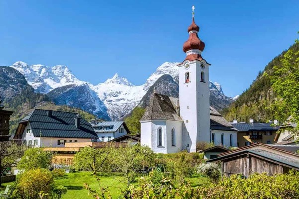

5. Lofer
47.587895, 12.694009

Lofer ott ül a völgyben, ahol a kőzetfalak már nem háttérként, hanem térformáló erőként működnek. A
település kétezer fő alatti lélekszámával kicsi, de a kereskedelmi útvonalak történetében fontos
pihenő és lóváltó pont volt Salzburg és Tirol között.
A Loferer Steinberge tömbje a település fölé tornyosul, a csúcsok 2500 méter körüli magasságot érnek
el, és a karsztos fennsík jelleg miatt barlangokkal és víznyelőkkel tagolt a térség. A
plébániatemplom gótikus gyökerű, belső tereinek barokkos átépítése jól mutatja, miként rétegződik a
vallási tér a későbbi stílusokkal.
A Saalach itt vadabb karaktert is tud mutatni, szurdokos, zúgós szakaszokkal, ami a folyó energiáját
nem romantikává, hanem geomorfológiává teszi. A hetivásárok hagyománya és a völgyi áthaladás szerepe
együtt magyarázza, miért városiasabb a központ, mint amit a lakosságszám önmagában sejtetne.